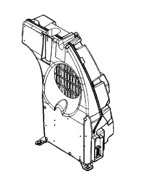

5570TC CHECK SUBWOOFER OPERATION
- Path
- Test > 55 ELECTRICAL EQUIPMENT > 5570 ACCESSORIES > 5570T CAR RADIO AND CAR TELEPHONE > 5570TC CHECK SUBWOOFER OPERATION
- Kind
- test / check procedure
- Applies to
- all engines; all production periods
- Interactive page
- https://sloeber94.github.io/elrnDB-fCrm/en/#/194002247
Applies to: all engines; all production periods
STEP | CHECK TO BE PERFORMED | RESOLUTION IF THE CHECK IS NOT OK |
|---|---|---|
1 | Check the direct power supply Check that a direct voltage of +12 is present at pin C8 of the subwoofer audio amplifier | Replace the 30 Amp fuse F54 in the under-dashboard fuse control unit. |
2 | Check the earth Check that pin C1 is correctly earthed | Restore the earth connection |
3 | Check the ignition enablement Check with the key on and Connect on that a 12 Volt signal is present at pin C2 | Restore the wiring across pin C2 of the amplifier and pin C6 of the radio |
4 | Check status recognition With Connect on, check that a 12 Volt signal is present at pin C3. | Restore the wiring across pin C3 of the amplifier and pin A2 of the radio |
The following figure shows the subwoofer
